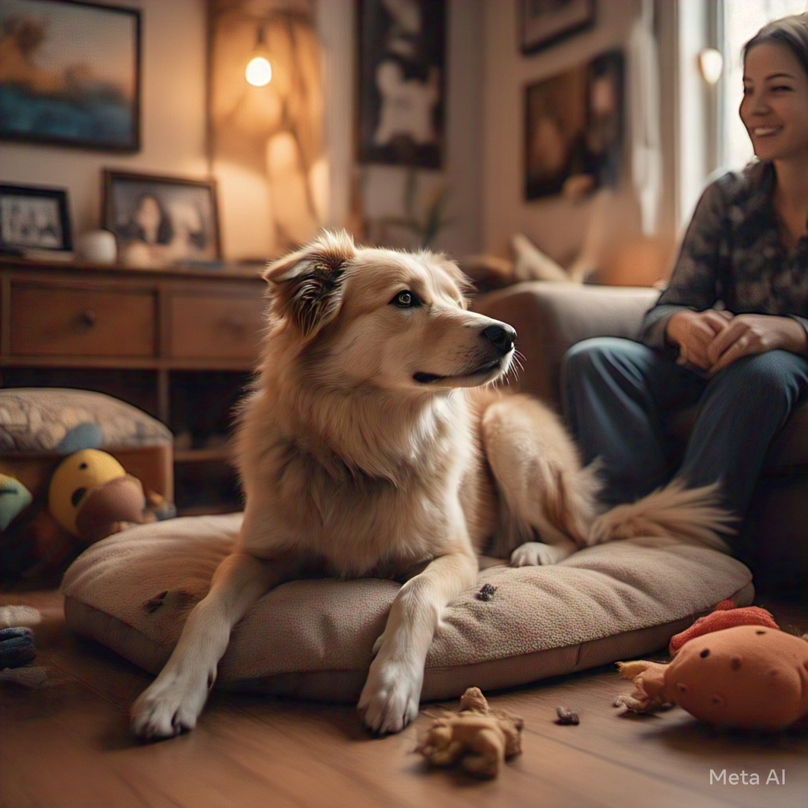

New Rescue Program Launched
Date: March 10, 2025 - We have launched our Karuna Rural Village Program to rescue dogs in remote areas. Read more about our efforts!

Date: March 10, 2025 - We have launched our Karuna Rural Village Program to rescue dogs in remote areas. Read more about our efforts!
Date: March 15, 2025 - Celebrate with us as Bella found her forever home. Check out her story!
